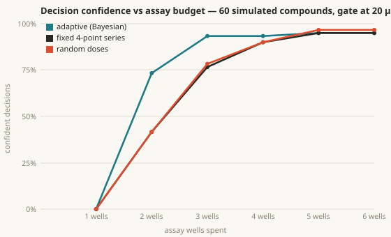
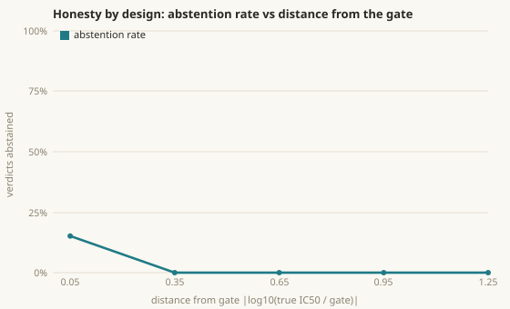

How fast does the loop reach a defensible decision? Every point is computed from the shipped code (bionexus.adaptive + bootstrap fitter), same as the eval task.

At 3 wells the adaptive series has made ~4× more confident calls than the fixed 0.5/2/10/40 series, and it gets there with fewer wells than fixed burns. The random-dose baseline is the honest control: without design, budget is spent on information-free points.

$ bn eval --task adaptive-dose-design $ bn eval --task verdict-stability # same math, scored, in CI